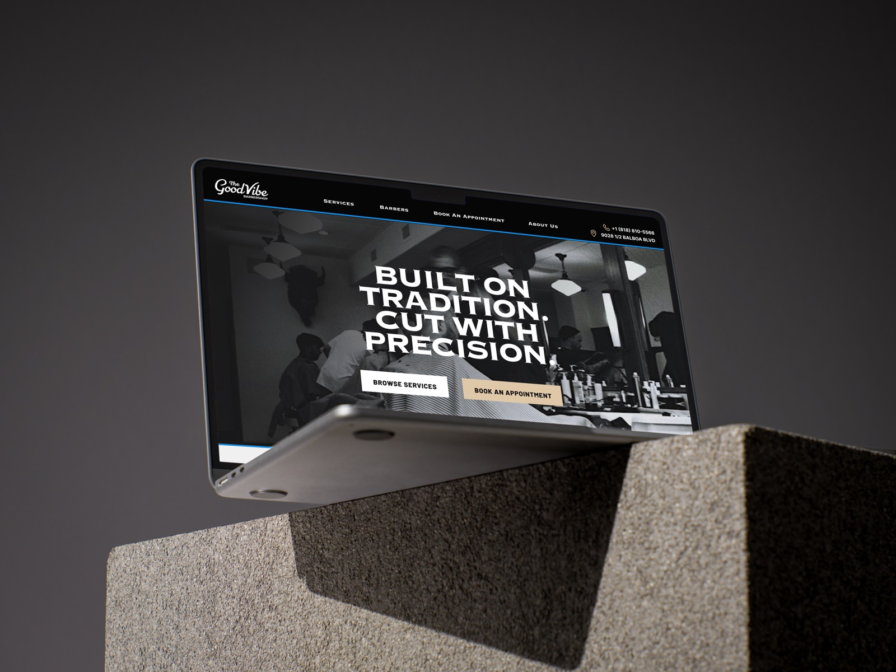
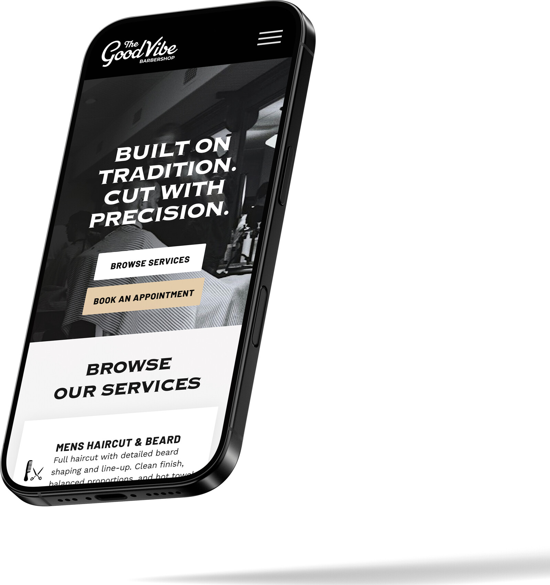
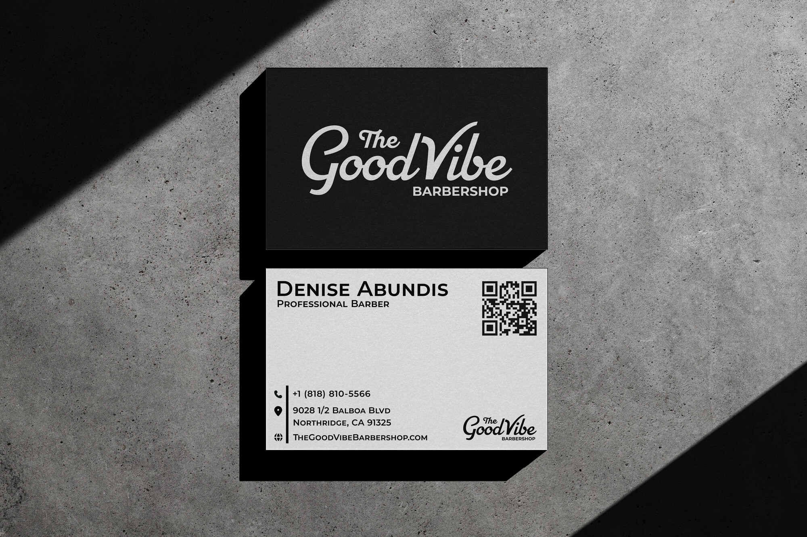
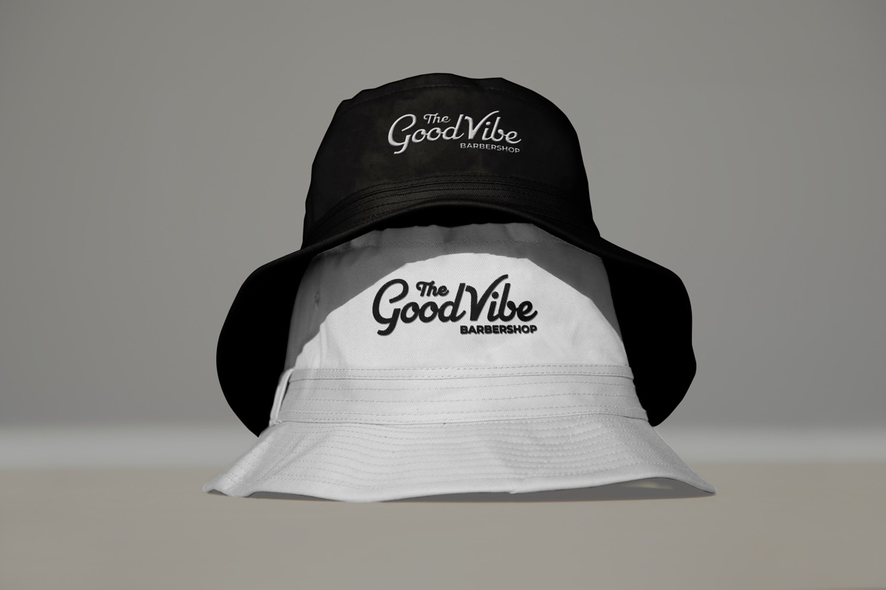

01 — Overview
Good Vibe Barbershop is a neighborhood shop rooted in craft and community. The problem: their digital presence didn't match the quality of the in-person experience. No website. Inconsistent branding. New customers had no way to discover barbers, understand services, or book with confidence.
This project established a cohesive brand system and a single-page website — making it easy to understand the shop and book directly through Booksy.
"The goal was to create a stronger digital presence that feels modern and consistent — while preserving the shop's traditional roots."

02 — Problem
Problems identified
Competitor research
03 — Research Insights
04 — Design Goals
01
Preserve the personality
Modernize without losing the neighborhood soul. Traditional feel, refined execution.
02
New logo system
Script wordmark inspired by vintage barbershop signage. Clean all-caps support type.
03
Single-page site
Services, barbers, and booking in one focused, scrollable experience.
04
Individual booking paths
Each barber gets their own profile and direct booking button.
05
Booksy integration
Redirect to existing Booksy — don't rebuild what works.
06
Mobile + desktop equal
Responsive from the first wireframe — not retrofitted.
05 — Visual Identity
Black and off-white palette — high contrast, timeless. Script wordmark for the logo, clean all-caps for everything else. No decoration that doesn't serve the content.
Visual decisions
Brand applications



06 — IA + Wireframes
Wireframes established layout, hierarchy, and content flow before any visual styling. They clarified how sections appear during scrolling, how users move through the page, and where booking gets introduced.
Hero
First impression
Clear message + primary CTA above the fold. Immediate trust signal.
Services
What's offered
Three-column cards. Price-visible. Scannable in 10 seconds.
Barbers
Who you're booking
Photo + name + individual Book Now button per barber.
About
Trust building
Shop values, community roots, location, hours.
07 — User Journey
Discover
Google / Maps / Social
Customer finds the shop through search or referral.
Arrive
Hero scan
Message + CTA visible immediately. Scrolls to services.
Evaluate
Services + Barbers
Checks profiles, prices, hours, location.
Book
One tap → Booksy
Selects date, time, barber. Done.
Confirm
Appointment locked
Booksy sends confirmation. Journey complete.
08 — Outcomes
"The updated website reflects the quality and care customers receive in person — bridging the gap between the shop's reputation and its digital presence."